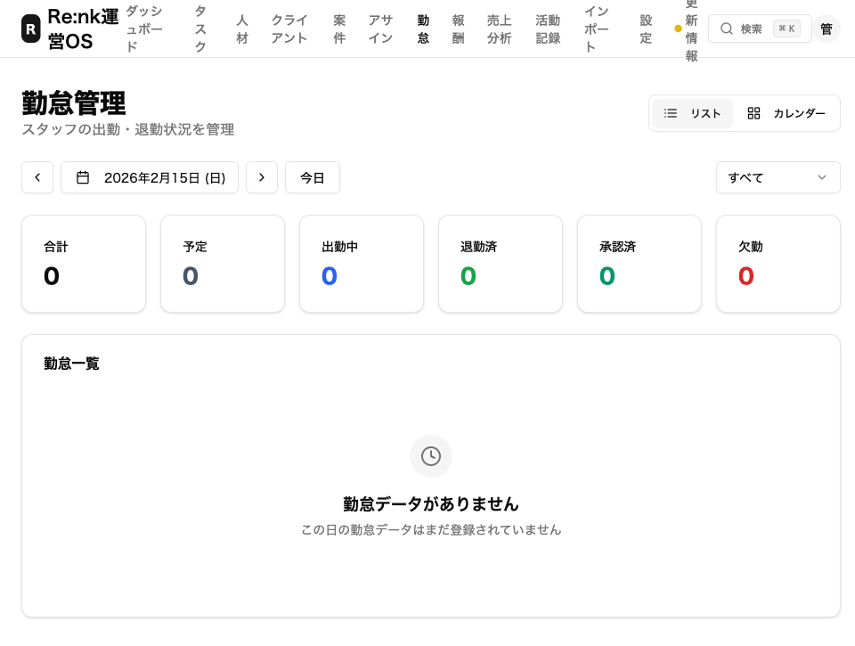
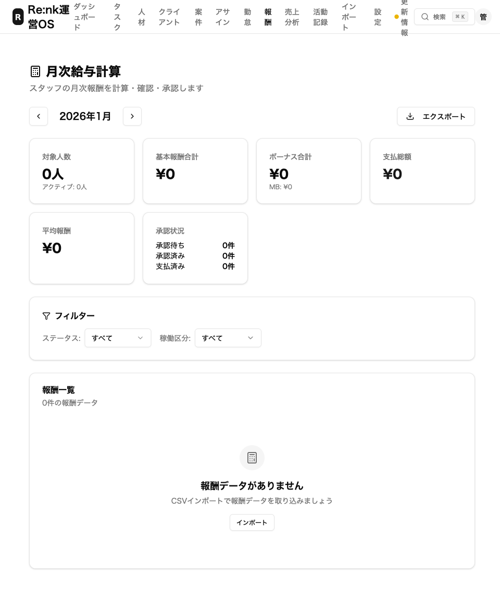
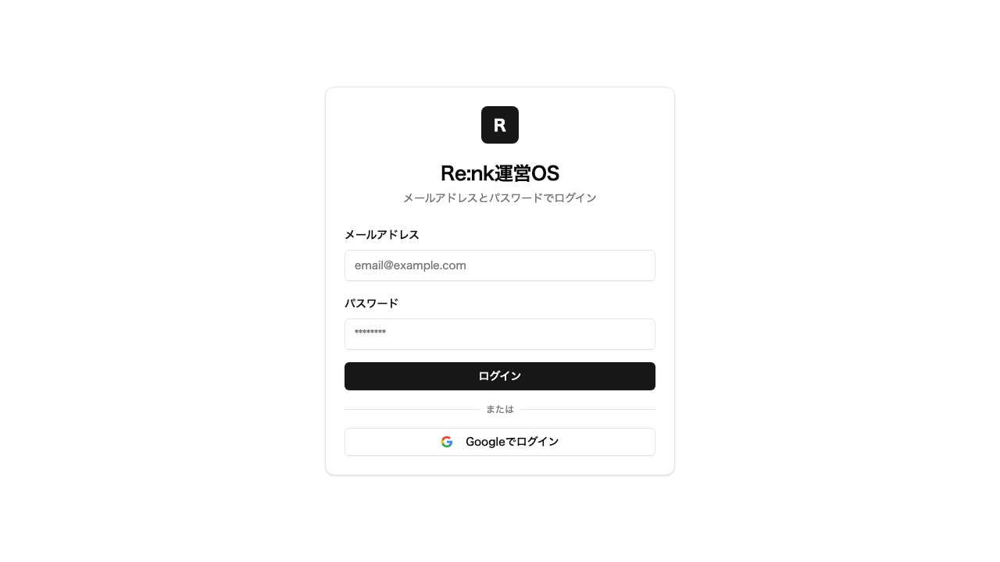
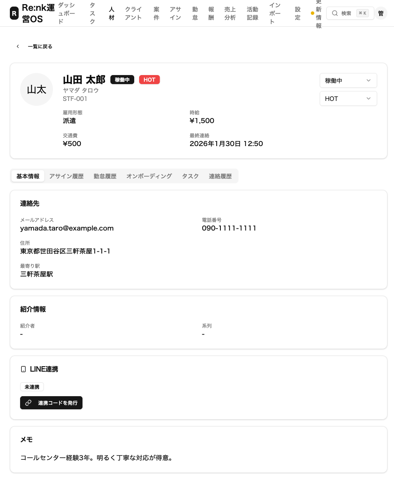
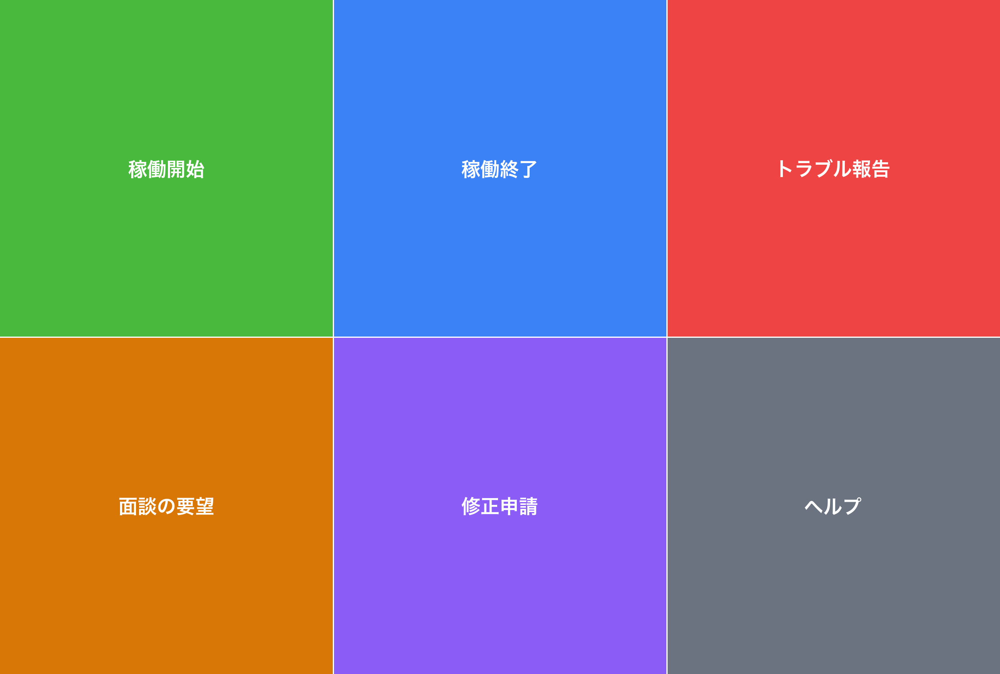
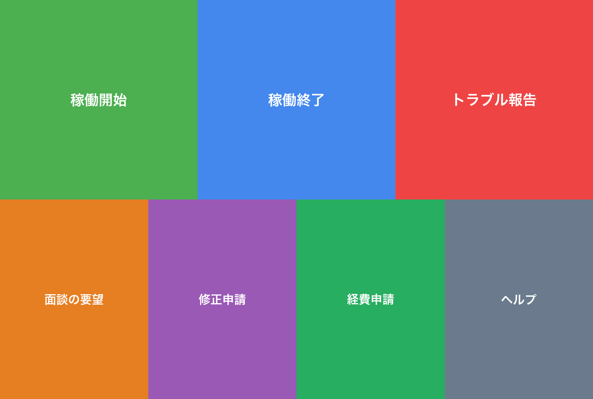

高野さん・齋藤さんの要望にすべて対応しました
2026年2月18日
こんにちは。Re:nk運営チームです。
高野さんと齋藤さんから頂いた貴重なご意見・ご要望に、すべて対応しました。 この記事では、どんな要望があって、それぞれ何がどう変わったのかを、写真つきでわかりやすくお伝えします。
対応した内容の一覧
高野さんの要望（7件）
| # | 要望 | 対応内容 |
|---|---|---|
| 1 | シフトの管理をしたい | カレンダー形式のシフト管理ページを追加 |
| 2 | シフトの前日にLINEでリマインドしてほしい | 自動通知の仕組みを追加 |
| 3 | 退職したスタッフの紹介料を自動で止めてほしい | 退職処理で自動停止する仕組みを追加 |
| 4 | 請求書の金額を自動で計算してほしい | 月次報酬の自動集計ページを追加 |
| 5 | 現場の地図をスタッフに送りたい | Googleマップ付きの現場案内を追加 |
| 6 | スマホでもアプリみたいに使いたい | ホーム画面に追加できるアプリ対応（PWA）を実装 |
| 7 | 初めての人にも使い方がわかるようにしてほしい | ヘルプ画面とガイドを追加 |
齋藤さんのフィードバック（6件）
| # | フィードバック | 対応内容 |
|---|---|---|
| 1 | 「時給」「出勤」など雇用っぽい言葉を直してほしい | 全画面の用語を業務委託向けに統一 |
| 2 | スタッフと案件を紐づけたい（双方向で） | 両方の画面から紐づけ・編集・削除できるように |
| 3 | 紐づけ時に単価を毎回入力するのが面倒 | スタッフを選ぶと単価が自動で入るように |
| 4 | 常駐なのかスポットなのか区別したい | 「常駐」「スポット」の選択と表示を追加 |
| 5 | 移動経費をLINEから申請したい | LINEに「経費申請」ボタンを追加 |
| 6 | シフトの確認を忘れるスタッフに通知してほしい | 毎朝自動でLINE通知する仕組みを追加 |
高野さんの要望 — 詳しい説明
1. シフトの管理をしたい
どんな要望？
「いつ誰がどの現場に入るか、カレンダーで見たい」という要望です。
どう対応した？
カレンダー形式のシフト管理ページを作りました。 月ごとにスタッフの出勤予定を一覧で見られます。シフトの追加・編集・削除もこの画面からできます。

ポイント：カレンダー上でスタッフの名前と勤務予定が一目で確認できます。予定の変更もクリック（タップ）するだけです。
2. シフトの前日にLINEでリマインドしてほしい
どんな要望？
「スタッフがシフトを確認し忘れて、当日慌てることがある。前日にLINEで通知してほしい」という要望です。
どう対応した？
案件ごとに「何日前に通知するか」を設定できるようにしました。 毎朝9時に自動でチェックして、まだシフトを確認していないスタッフにLINEで通知します。
ポイント：案件の設定画面で「シフト日の ○ 日前に通知」と設定するだけ。あとはシステムが毎朝自動で通知してくれます。0にすると通知なしにもできます。
3. 退職したスタッフの紹介料を自動で止めてほしい
どんな要望？
「スタッフが退職したのに紹介料の計算がそのまま残っていて、手作業で止めるのが手間」という要望です。
どう対応した？
スタッフのステータスを「退職」に変更すると、紹介料の計算が自動で停止するようにしました。
ポイント：退職処理をすれば、あとは自動。手作業での対応は不要になりました。
4. 請求書の金額を自動で計算してほしい
どんな要望？
「毎月の報酬額をExcelで手計算するのが大変」という要望です。
どう対応した？
月次報酬の自動集計ページを追加しました。スタッフごとの稼働実績をもとに、報酬額が自動で計算されます。

ポイント：期間を指定すると、各スタッフの稼働時間・報酬額が自動計算されます。集計結果はそのまま帳票として使えます。
5. 現場の地図をスタッフに送りたい
どんな要望？
「初めての現場に行くスタッフに、地図を送れるようにしてほしい」という要望です。
どう対応した？
案件の詳細にGoogleマップの住所情報を登録できるようにしました。スタッフへの案内にそのまま使えます。
ポイント：案件登録時に住所を入力しておけば、Googleマップのリンクが自動で生成されます。
6. スマホでもアプリみたいに使いたい
どんな要望？
「管理画面をスマホで使うとき、毎回ブラウザを開いてURLを入れるのが面倒」という要望です。
どう対応した？
PWA（ホーム画面に追加できるWebアプリ）に対応しました。スマホのホーム画面にアイコンを追加すると、アプリのように使えます。

ポイント：iPhoneなら「共有」→「ホーム画面に追加」、Androidなら「メニュー」→「ホーム画面に追加」で、アプリのように使えるようになります。
7. 初めての人にも使い方がわかるようにしてほしい
どんな要望？
「管理画面に初めてログインしたとき、何をすればいいかわからない」という要望です。
どう対応した？
ヘルプページと使い方ガイドを追加しました。画面上部のメニューから「ヘルプ」をクリックすると、基本的な操作方法が確認できます。
ポイント：「何から始めればいい？」に答えるガイドを用意しました。困ったときはいつでも参照できます。
齋藤さんのフィードバック — 詳しい説明
1. 「時給」「出勤」など雇用っぽい言葉を直してほしい
どんなフィードバック？
「業務委託なのに “時給” や “出勤” という言葉が使われていると、法律的に問題になるかもしれない」というフィードバックです。
どう対応した？
画面に表示されるすべての言葉を、業務委託にふさわしい表現に変更しました。
| 変更前 | 変更後 |
|---|---|
| 時給 | 時間単価 |
| 日給 | 日額単価 |
| 交通費 | 移動経費 |
| 出勤 | 業務開始 |
| 退勤 | 業務終了 |
| 勤怠 | 稼働状況 |
| 給与 | 報酬 |
ポイント：法律の専門家に「偽装請負」と指摘されるリスクを防ぐための変更です。操作方法は何も変わりません。
2. スタッフと案件を紐づけたい（双方向で）
どんなフィードバック？
「スタッフの画面から案件を紐づけたり、案件の画面からスタッフを紐づけたりしたい」というフィードバックです。
どう対応した？
どちらの画面からも紐づけ（アサイン）できるようにしました。
- スタッフ詳細画面 →「案件をアサイン」ボタン
- 案件詳細画面 →「スタッフをアサイン」ボタン
どちらからも、紐づけの編集・削除ができます。

ポイント：スタッフ側からも案件側からも、ワンクリックで紐づけの追加・変更ができます。一覧では期間・単価・状態がひと目で分かります。
3. 紐づけ時に単価を毎回入力するのが面倒
どんなフィードバック？
「スタッフを案件に紐づけるたびに、いちいち時間単価を入力するのが面倒」というフィードバックです。
どう対応した？
スタッフを選ぶと、そのスタッフに登録されている単価が自動で入力されるようにしました。 もちろん、案件ごとに違う単価にしたい場合は手動で変更もできます。
ポイント：スタッフを選ぶだけで単価が入る。案件ごとに変えたいときだけ上書きすればOKです。
4. 常駐なのかスポットなのか区別したい
どんなフィードバック？
「このスタッフが常駐なのかスポット（単発）なのか、画面で区別できるようにしてほしい」というフィードバックです。
どう対応した？
アサイン（紐づけ）に「常駐」「スポット」の区分を追加しました。 一覧画面ではバッジ（色つきのラベル）で表示されるので、ひと目で区別できます。
ポイント：アサイン作成時に「常駐」か「スポット」を選ぶだけ。一覧でも色つきラベルですぐにわかります。
5. 移動経費をLINEから申請したい
どんなフィードバック？
「現場への移動にかかった交通費を、LINEからサクッと申請できると助かる」というフィードバックです。
どう対応した？
LINEのメニューに「経費申請」ボタンを新しく追加しました。
以前のメニュー（6ボタン）

新しいメニュー（7ボタン・経費申請が追加）

使い方
- LINEのメニューで「経費申請」をタップ
- 「金額
内容」の形式で入力（例：
1200 新宿から渋谷まで電車） - 送信すると、管理画面に申請が届く
- 管理者が管理画面で「承認」または「却下」
ポイント：LINEからワンタップで経費申請が始められます。管理者はパソコンの管理画面から承認・却下ができます。
6. シフトの確認を忘れるスタッフに通知してほしい
どんなフィードバック？
「シフトを入れても確認してくれないスタッフがいる。前もって通知で気づかせてほしい」というフィードバックです。
どう対応した？
案件ごとに「シフト日の何日前に通知するか」を設定できるようにしました。 毎朝9時に自動でチェックして、シフトを確認していないスタッフにLINEで通知します。
ポイント：案件の編集画面で「2日前に通知」と設定すると、シフトの2日前の朝9時に自動でLINE通知が届きます。管理者が手動で連絡する必要はありません。
テストしてみてほしいこと
以下の操作を実際に試してみていただけると嬉しいです。問題があればすぐに修正します。
齋藤さんへのお願い
| # | やってみてほしいこと | 確認ポイント |
|---|---|---|
| 1 | LINEのメニューに「経費申請」ボタンが表示されているか確認 | 下段の左から3番目に緑色のボタンがあればOK |
| 2 | 「経費申請」ボタンをタップして、1200 電車代テスト
と送信 |
「申請を受け付けました」と返ってくればOK |
| 3 | 管理画面の「経費申請管理」を開いて、さっきの申請が表示されるか確認 | 金額1200円の申請が一覧にあればOK |
| 4 | スタッフ詳細画面で「案件をアサイン」ボタンを押してみる | アサイン作成画面が開いて、常駐/スポットを選べればOK |
| 5 | 案件詳細画面の「スタッフをアサイン」ボタンを押してみる | スタッフを選ぶと単価が自動で入ればOK |
高野さんへのお願い
| # | やってみてほしいこと | 確認ポイント |
|---|---|---|
| 1 | 管理画面にログインして、画面の言葉が「時間単価」「稼働状況」になっているか確認 | 「時給」「勤怠」という古い言葉がなくなっていればOK |
| 2 | 案件の編集画面で「シフト日の○日前に通知」の設定があるか確認 | 数字を入れられる欄があればOK |
| 3 | スマホで https://renk-os.vercel.app を開き「ホーム画面に追加」してみる | アプリのようにアイコンが表示されればOK |
お願い
テストしていただいて、「ここがおかしい」「こうしてほしい」ということがあれば、遠慮なくお伝えください。 皆さんからのフィードバックがRe:nk OSをより使いやすくする原動力です。
いつもありがとうございます！
Re:nk運営チーム